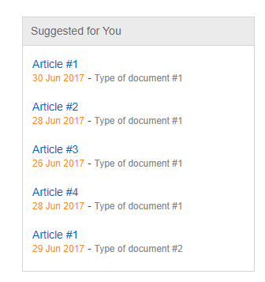
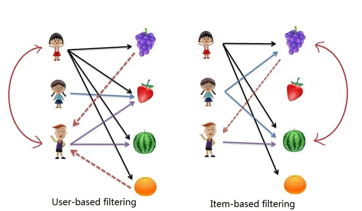

Porównanie systemów rekomendacji
Promotor: dr Krzysztof Manuszewski
Michał Niegrzybowski - 143303
Agenda
- cel pracy
- zagadnienia dotyczące systemów rekomendacji
- sposoby na gromadzenie danych
- użyte technologie
- sposoby na poprawienie rekomendacji
- sprawdzenie poprawności działania systemów rekomendacji
- analiza porównawcza systemów rekomendacji
- podsumowanie
Cel pracy
-
porównanie systemów rekomendacji
- Azure Recommendation API
- Mahout
- NRecoRecommender
- rozwiązania komercyjne
- sposoby zbierania informacji
- ewaluacje
- sposoby na poprawę jakości rekomendacji
Zagadnienia dotyczące systemów rekomendacji
Ogólne problemy i ich rozwiązania
- zbieranie danych
-
ustalanie podobieństwa
- użytkowników
- przedmiotów
- co w przypadku braku danych?
- optymalizacja
- estymacja
Zastosowanie
- Spotify

Zastosowanie
- Allegro

Zastosowanie
- Helion

Zastosowanie
- IHS Markit

Zastosowanie

Zastosowanie
- Booking

Sposoby na gromadzenie danych
Usage
- interakcja użytkownika z witryną
- kliknięcia
- pobrania elementów
- ocena oglądanego produktu
- komentarze
DwellTime
- technika opisana przez inżynierów z firmy Yahoo
- opiera się na gromadzeniu danych związanych z zaangażowaniem klienta
-
mierzony jest między innymi:
- czas oglądania dokumentu
- długość dokumentu
- typ urządzenia
- dzięki zebranym danym istnieje możliwość przeprowadzenia analizy danych
- analiza pozwala na zawarcie danych odnośnie DwellTime'u przy generowaniu rekomendacji
Inne podejścia
- mapy cieplne
- zbieranie danych z sensorów urządzeń elektronicznych
- dane lokalizacyjne
- autoryzacja poprzez wspólnego poświadczyciela uprawnień
- śledzenie ruchów myszki
- śledzenie ruchów gałki ocznej
Metody tworzenia systemów rekomendacji
Collaborative-Filtering
- automatyczna predykcja (filtering)
- informacje od klientów (collaborating)

Azure Recommendation API
- moduł na platformie Azure
- przykładowa aplikacja firmy Microsoft napisana w języku C#
-
3 w 1
- user-based
- item-based
- najcześciej kupowane
- abonament na usługę
Apache Mahout
- rozwiązanie firmy Apache
- szeroki zakres modyfikacji
- możliwość pisania w Scali lub Javie
-
możliwość tworzenia w oparciu o
- pamięć rozproszoną (Spark, H2O)
- in-memory
NRecoRecommender
- rozwiązanie firmy NReco
- port biblioteki Mahout
- możliwość pisania w F# lub C#
- szeroki zakres modyfikacji
- niektóre funkcje biblioteki Mahout, nie zostały przepisane
Sposoby na poprawienie rekomendacji
Filtrowanie i Kategoryzacja
- ograniczenie modelu do aktualnego kontekstu dla filtrowania
- pracowanie na pełnym modelu przy kategoryzacji
- uwydatnianie przedmiotów pasujących do kontekstu
- polecanie przedmiotów do których użytkownik posiada uprawnienia
- polecanie przedmiotów do których użytkownik nie posiada uprawnień
- filtrowanie poza systemem rekomendacji
Rescoring
- poleganie na cechach zebranych danych
- wypracowanie charakterystyk danych
- uwzględnienie w/w charakterystyk przy obliczaniu oceny rekomendacji
- proces rescoringu działa na samym końcu tuż przed zwróceniem poleceń
Sprawdzenie poprawności działania systemów rekomendacji
Ewaluacje
- klasteryzacja zbioru
- automatyzacja przeprowadzanych testów
- analiza otrzymanych wyników
- trafność ewaluacji a prawdziwa skuteczność
Ankiety
- manualne
- ograniczone do wybranej grupy użytkowników/analityków
- najbardziej precyzyjne
- ocena A od osoby 1 nie jest równa ocenie A od osoby B
Badanie sentymentu
- analiza komentarzy nie jest trywialna
- wykorzystanie Azure Cognitive Services bądź pochodnych narzędzi
- pozwala na automatyczne zbadanie sentymentu wypowiedzi
- podejście takie umożliwia pełną automatyzację jednocześnie zapewniając największą trafność testowania systemu rekomendacji
Analiza porównawcza systemów rekomendacji
- brak możliwości modyfikacji przebiegu generowania rekomendacji w przypadku Azure Recommendation API
- stałe czasy generowania rekomendacji, bez względu na liczbę polecanych przedmiotów (Mahout, NRecoRecommender)
- wzrost liniowy czasu generowania rekomendacji przy zwiększaniu limitu użytkowników (Azure Recommendation API)
- każde z rozwiązań próbuje cache'ować wcześniej wykonane zapytania w celu ich późniejszej szybszej generacji
- bardzo zawodny proces ładowania danych w przypadku Azure Recommendation API
Zebrane doświadczenie
- rozpoczęcie prowadzenia własnej strony internetowej
- rozpoczęcie kontrybucji do projektów open source
- utrwalenie i podniesienie umiejętności związanych z programowaniem funkcyjnym, głównie w języku F#.
- odniesienia do napisanych artykułów w licznych zestawieniach ciekawych artykułów, dokumentacji Microsoftu
- liczne oferty pracy i współpracy
Podsumowanie
- Mahout okazał się rozwiązaniem najbardziej dojrzałym
- praca z NRecoRecommender z uwagi na użycie języka F# najprzyjemniejsza
- Azure Recommendation API okazał się najbardziej optymalny dla domen gdzie nie ma skompliowanej logiki związanej z generowaniem rekomendacji
- najszybszym systemem był Mahout
- najmniej problemów związanych ze znalezieniem potencjalnych pracowników, powinny mieć firmy, które zdecydują się na bibliotekę Mahout
- każdy ze sposobów zbierania danych jest związany z domeną
- po ustaleniu pewnych początkowych założeń, każdy sposób można dopasować stricto do domeny
- obrazuje to DwellTime użyty w przypadku firmy Yahoo i IHS Markit